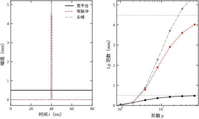
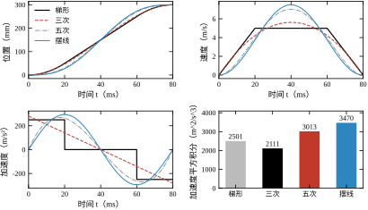
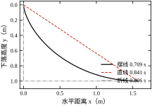
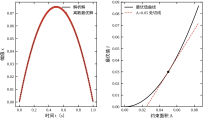
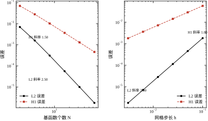

一台贴片机的 X 轴要在 80 ms 内从静止走完 300 mm，再停稳。起点、终点、总时间都定死了，看上去没什么可设计的：既然两端固定，中间随便连一条曲线不就行了？
现场的回答是否定的。梯形速度曲线（加速—匀速—减速）算起来最省事，但加速度在三个阶段交界处发生跳变，对应的电流指令是阶跃，导轨会“咯”一声；S 曲线（加速度连续）把跳变抹平，峰值加速度却更高；按最小能量设计的轨迹峰值电流最低，但在中段速度最大，风阻与摩擦损耗反而上升。三条轨迹的端点完全相同，峰值加速度、峰值电流、jerk（加速度变化率）、温升可以相差一倍以上。换一条轨迹，定位超差、驱动器过流、导轨异响都可能跟着变。
这就逼出一个新问题：当决策对象不是一组数，而是一整条曲线时，怎么比较、怎么求最优？ 微积分处理的是“自变量是实数”的函数，这里自变量本身是一个函数，普通导数无从下手。把曲线在时间上离散成 800 个点、当成 800 维向量去优化，可以算，但会带来三个新麻烦：维度随精度膨胀、差分格式影响结果、约束（端点、速度限）难以精确满足。
本章要建立的就是处理这类问题的语言：把函数看成某个空间里的点，用范数度量“两条曲线有多接近”，用泛函的变分代替导数，用 Euler–Lagrange 方程把无穷维的极值问题化归为微分方程。这套语言是第 58 章最优控制、第 62 章变分法与最优控制进阶、第 96 章分布参数系统的共同前置。
看似不相干的三类工程问题，数学结构是同一个，见表 9-1。
| 问题 | 决策对象 | 指标 | 约束 |
|---|---|---|---|
| 轨迹规划 | x(t) | 时间、能量、jerk | 端点、速度/加速度限 |
| 最优控制 | \boldsymbol{u}(t) | 代价 J | 状态方程、控制限 |
| 场问题（传热、结构） | u(\boldsymbol{x}) | 能量泛函 | PDE、边界条件 |
三者的共同点是：候选对象是一个函数，指标是一个把函数映成实数的映射，约束是函数必须满足的等式或不等式。这个“把函数映成实数”的映射就是泛函。泛函与普通函数的关系，正如普通函数与实数的关系——每上升一层，自变量从一个数变成一个函数。
之所以能共用一套语言，是因为三者都能写成“在约束下极小化一个积分”。轨迹规划极小化能量或时间，最优控制极小化代价，场问题极小化总势能；约束分别是端点条件、状态方程、边界条件。写成统一形式后，Euler–Lagrange 方程、乘子、自然边界条件这些工具就可以一次建立、三处使用。这也是为什么本章放在数学部分而不是控制部分：它提供的不是某个算法，而是三类问题共用的语法。
工程上还有一个反向的使用方式。多数 PDE（热传导、弹性力学）本身来自某个能量泛函的极小化；把这个泛函离散化再求极小，得到的数值格式比直接离散 PDE 更稳定，这就是有限元法的出发点（第 96 章）。所以变分法不只是“求最优轨迹”的工具，也是理解数值方法的钥匙。
把表 9-1 的三行写成同一个形式，差别只在被积函数 L 的形式：轨迹规划常见 L=\dot x^2（最小能量）或 L=\dddot x^2（最小 jerk）；最优控制常见 L=\boldsymbol{x}^{\mathrm{T}}Q\boldsymbol{x}+\boldsymbol{u}^{\mathrm{T}}R\boldsymbol{u}；一维梁的弯曲能是 L=\frac{1}{2}EI\,(u'')^2，与 f u 一起积分后对 u 变分，得到的正是梁的挠曲线方程。三者的数学处理完全一样，只是 L 中出现的最高阶导数不同——轨迹 1 阶、控制 1 阶、梁 2 阶。这个阶数决定了边界条件的数量，也决定了“哪些量必须在端点给定”，是后面反复使用的第一条判据。
第一个问题：两条曲线“接近”是什么意思？ 答案不止一种。按最大偏差度量（L^\infty 范数）、按平均偏差度量（L^2 范数）、按变化率度量（H^1 范数），会得到不同的“邻域”，也会得到不同的收敛结论。选错范数，优化器会给出一个平均很好、局部很糟的解。
第二个问题：泛函的导数是什么？ 对 J[x] 在某个函数 x 上沿方向 h 求导，得到一阶变分 \delta J。它是一元导数在函数空间的推广，但“方向”有无穷多个，必须对所有可行方向都成立。
第三个问题：极值的必要条件是什么？ 令一阶变分为零，通过分部积分把 h 的导数转成 h 本身，得到 Euler–Lagrange 方程。这是一个微分方程，阶数等于泛函中出现的最高阶导数乘二。
第四个问题：约束怎么进？ 端点固定、速度受限、积分量固定（等周问题），处理方式不同。拉格朗日乘子把约束并入泛函，但乘子本身也是函数；不等式约束还要加互补松弛条件（第 58 章 KKT）。
第五个问题：离散之后为什么解会抖、会不收敛？ 网格越密误差不一定越小；用集中质量近似会让波速算错；差分格式若不对应任何离散泛函，可能收敛到错误答案。这类问题统称“变分犯罪”（variational crime），是有限元实践中的常见坑。
五个问题分别对应 9.2 至 9.4 节，9.5 节讨论它们在工程上的适用边界。
本章的核心可以压缩成一句：变分法把“在无穷多个函数里挑最好的一个”化归为“解一个微分方程加一组边界条件”；反过来，直接法（Ritz、Galerkin、有限元）把微分方程化归为有限维线性代数问题。
两条路线互为镜像，各有适用场合。解析路线能给出结构性的结论（例如最优轨迹的加速度必为分段常数或分段线性），适合分析与设计；直接法能处理复杂边界与变系数，适合计算。工程上通常先用解析路线定形状，再用直接法算数值。
这个顺序有实际理由。解析解告诉你“最优解长什么样”——是分段常数、多项式还是摆线，需要几个边界条件，峰值指标随参数怎么变；这些信息在做方案比较时比一个数字有用得多。直接法告诉你“在给定网格下数值是多少”，但它不解释形状。反过来先做直接法，往往得到一个看不出规律的数值解，再回头猜形状，事倍功半。一个常见的工程流程是：用解析解定出五次多项式的形状，再用 B 样条在控制器里逼近它，逼近误差控制在微米级；形状来自解析，数值来自离散，两者各司其职。
全章按五步展开：先定义函数空间、范数、内积（9.2）；再推一阶变分与 Euler–Lagrange 方程，讨论自然边界与约束（9.3）；然后把连续结论搬到离散网格，说明一致性与条件数（9.4）；接着给出适用边界，什么情况下变分结论不可信（9.5）；最后用七个数值实验核对每一条结论（9.6）。
反例一：把泛函当多元函数逐点求导。 有人把 J[x]=\int_0^T\dot x^2\,\mathrm{d}t 离散成 \sum(\Delta x_i/\Delta t)^2\Delta t，然后对每个 x_i 求偏导令其为零，得到一个“每个点都等于前后两点平均”的方程组。这个结果看似合理，其实是把 x_i 与 \dot x_i 当成独立变量，漏掉了它们之间的耦合；加上端点条件后，方程组的解确实是一条直线，但这是离散格式的巧合，换成含 x 与 \dot x 交叉项的泛函就会给出错误答案。正确做法是先做分部积分，再令变分系数为零。
反例二：范数选错。 两条轨迹的 L^2 距离只有 0.1 mm，看起来几乎一样，但其中一条在 1 ms 内有一个 5 mm 的尖峰。用 L^2 验收会放过这个冲击，因为它只持续 1 ms；用 L^\infty 验收则会立刻拦下。反过来，L^\infty 对整体缓慢偏差不敏感：一条全程偏高 0.5 mm 的轨迹与理想轨迹的 L^\infty 距离是 0.5 mm，看起来“不大”，但可能已经超出加工公差。没有一种范数能同时管住尖峰与整体偏差，验收指标必须写清用哪个范数。
反例三：离散格式与原泛函不对应。 连续问题的最小值是唯一的，离散后却可能出现“网格越密、解越差”的现象。原因通常有两个：一是离散泛函与连续泛函不一致（例如用梯形积分近似一个含导数平方的积分，节点导数用了单侧差分），二是约束在离散后被放松或加强。这类错误的危险在于它不会报错，只会让收敛阶悄悄从二阶掉到一阶，甚至不收敛。检验办法是做网格加密试验，看误差是否按理论阶下降；不下降就说明格式有问题，而不是“精度不够”。
三个反例指向同一件事：变分法的结论依赖“空间、范数、离散方式”三个选择，任何一个选错，数学推导仍然成立，工程结论却已经偏了。下一节先把这三个选择中的前两个写清楚。
第三个反例在本章有定量版本。§9.6 的有限元实验里，L^2 误差的实测阶稳定在 2.00、H^1 误差稳定在 1.00，与理论完全一致，说明那个格式没有犯罪；而反例里说的“阶悄悄掉到一阶”，表现为实测阶变成 1.00 与 0.50。这类偏差不会触发任何警告，只会让“加密一倍、误差降四倍”的预期落空。收敛阶是格式的体检指标，不是精度指标，这也是本章反复强调它的原因。
函数空间的整套语言不是新发明，而是单变量微积分逐项搬运的结果。表 9-2 把对应关系列出来，读者可以把它当作全章的对照表：看到一个陌生概念，先找它在左列的“老家”。
| 单变量微积分 | 函数空间 | 本章位置 |
|---|---|---|
| 实数 x\in\mathbb{R} | 函数 x\in H^1 | §9.2.1 |
| 绝对值 \lvert x\rvert | 范数 \lVert x\rVert | §9.2.2 |
| 点积 \boldsymbol{a}\cdot\boldsymbol{b} | 内积 \langle x,y\rangle | §9.2.3 |
| 函数 f(x) | 泛函 J[x] | §9.2.4 |
| 导数 f'(x) | 变分导数 \delta J/\delta x | §9.2.4 |
| 驻点条件 f'=0 | Euler–Lagrange 方程 | §9.3.1 |
| 二阶导 f''>0 判极小 | 二阶变分、Legendre 条件 | §9.3.5 |
| 拉格朗日乘子 \lambda | 函数乘子 \lambda(t) | §9.3.4 |
| 积分 \int f\,\mathrm{d}x | 变分问题本身 | §9.3 |
类比有两处失效，必须提前说明。第一处是紧性。有限维里“有界闭集必紧”保证了极小值一定取到；函数空间的有界闭集不一定紧，所以变分问题可能没有解，必须先证明极小元存在（这就是 §9.2.1 为什么坚持用完备空间）。第二处是方向。实数只有一个方向可走，函数空间有无穷多个方向，一阶变分为零意味着“沿所有可行方向都为零”，这比单变量的“左右导数同号”强得多，也是 Euler–Lagrange 方程能成为充要判据之一的原因。
把这两处差异记住，后面看到“存在性证明”“弱收敛”“极小化序列”这些词就不会觉得突兀：它们都是在补有限维直觉失效后留下的洞。
把曲线当作点，第一步要指定“点在哪个集合里”。最直观的选择是 k 阶连续可导函数构成的集合 C^k[0,T]：曲线本身连续、导数也连续，符合工程直觉。但这个集合有一个致命缺陷——不完备。
不完备的意思是：一列互相越来越接近的函数，其极限可能不在集合里。举例来说，用一列光滑曲线去逼近一条折线，这列曲线在 C^1 意义下是柯西列，极限却是一个在折点处不可导的函数，不属于 C^1。后果是变分问题可能“没有解”：极小化序列收敛到一个不该被允许的对象上，最小值取不到。工程上表现为优化算法不断加密网格、目标函数不断下降，却永远不收敛到一个可用的轨迹。
解决办法是换用更宽的空间，把“导数”理解为弱导数（almost everywhere 意义下的导数），并要求函数与导数都平方可积。这类空间称为 Sobolev 空间。先定义基础空间 L^p：
\|x\|_p=\left(\int_0^T|x(t)|^p\,\mathrm{d}t\right)^{1/p},\qquad 1\le p<\infty, \tag{9-1}
p=\infty 时取本质上确界 \|x\|_\infty=\operatorname{ess\,sup}_{t}|x(t)|。p=2 是唯一能由内积诱导的范数：
\langle x,y\rangle=\int_0^T x(t)y(t)\,\mathrm{d}t,\qquad \|x\|_2^2=\langle x,x\rangle . \tag{9-2}
在 L^2 上再加一项导数平方，得到一阶 Sobolev 空间 H^1：
\|x\|_{H^1}^2=\|x\|_2^2+\|\dot x\|_2^2 . \tag{9-3}
H^1 是完备的，允许折线存在，只要折线的斜率平方可积。这一点非常关键：工程上的最优轨迹经常是分段的（梯形速度、bang-bang 控制），它们不属于 C^1，但属于 H^1。若强行在 C^1 里找最优，得到的会是“把折角磨圆的近似解”，而不是真正的最优解，峰值指标也会随之失真。
一维情形还有一个便利性质：H^1[0,T] 连续嵌入 C^0[0,T]，所以 H^1 函数处处有定义，端点约束 x(0)=x_0 是有意义的。二维及以上没有这个性质，H^1 函数可能无界，这就是有限元中“节点值”必须谨慎处理的原因。本章只涉及一维时间或一维空间，可以放心使用点值约束。
弱导数可以具体算出来，不必停留在定义上。取 x(t)=|t-0.5|，它在 t=0.5 不可导，但弱导数存在且等于符号函数 \operatorname{sign}(t-0.5)（在 t=0.5 处任取一值）。验证方式是分部积分：对任意光滑且在端点为零的试验函数 \varphi，有 \int_0^1 x\dot\varphi\,\mathrm{d}t=-\int_0^1\operatorname{sign}(t-0.5)\varphi\,\mathrm{d}t。左边只用到了 x 的连续性，右边只用到了符号函数的可积性。弱导数把“能否求导”从逐点性质变成了积分性质，折线、阶跃因此都能进入同一个框架。
再往上一层是 H^2：要求 x、\dot x、\ddot x 都平方可积，对应泛函含 \ddot x^2 的问题（最小加速度、梁的弯曲）。空间阶数越高，允许的曲线越光滑，但边界条件也越多。工程上常见的困惑是“为什么我的轨迹算出来有折角”，答案往往是把本该在 H^2 里求的问题放到了 H^1 里：目标函数只惩罚一阶导数，折角自然不会受到惩罚。
有限维空间里所有范数等价，换成无穷维就不成立了。三者之间只有带区间长度 T 的不等式：
\|x\|_\infty\le\|x\|_2\le\sqrt{T}\,\|x\|_\infty,\qquad \|x\|_2\le\|x\|_1\le\sqrt{T}\,\|x\|_2 . \tag{9-4}
常数 \sqrt T 无法去掉，所以“L^2 意义下收敛”不蕴含“L^\infty 意义下收敛”。表 9-3 给出三种范数的工程读法。
| 范数 | 度量什么 | 对什么敏感 | 典型用途 |
|---|---|---|---|
| L^\infty | 最大偏差 | 短时尖峰 | 安全限、超调验收 |
| L^2 | 平均能量 | 整体形状 | 最小二乘、能量最优 |
| L^1 | 绝对偏差和 | 稀疏大偏差 | 鲁棒估计、稀疏优化 |
| H^1 | 偏差与变化率 | 抖动、斜率 | 变分问题、有限元误差 |
四种范数不只是“四种算法”，它们对应四种不同的统计量。在 L^2 下最佳常数逼近是均值，在 L^1 下是中位数，在 L^\infty 下是区间中点（极小化最大偏差）。均值对异常值敏感，中位数不敏感，中点只看两端——选择范数等价于选择“用什么代表一组数据”。这解释了为什么测量数据处理常用中位数（第 13 章）、最小二乘拟合用均值、安全限校验用中点：三者的工程目标本来就不同。
用一个数说明差距。设总时长 T=80 ms，某条轨迹在 1 ms 内出现 5 mm 的余弦形尖峰，其余时间与理想轨迹重合。它的 L^2 范数为 5\times\sqrt{0.001/2}=0.112 mm，L^\infty 范数为 5 mm，相差约 45 倍。若验收条款写“L^2 偏差小于 1 mm”，这条轨迹合格；写“最大偏差小于 0.5 mm”，它直接不合格。同一份数据，两种范数给出相反的结论，所以验收文件里的“误差”二字必须带范数下标。
图 9-2 把三条 L^2 范数都归一到 0.141 mm 的信号画在一起。宽平台的峰值只有 0.5 mm，窄脉冲的峰值为 4.47 mm，缩放后的尖峰为 1.79 mm；三者的 L^2 完全一样，L^\infty 相差 12.6 倍。右图是它们的 L^p 范数随 p 增大趋近 L^\infty 的过程，p=64 时尖峰仍只到 4.33 mm，距 5 mm 还差 13%。

右图的用处是提醒：用 L^p 的大 p 值去近似 L^\infty 是收敛很慢的。做鲁棒优化时若把 \max 换成 L^{16}，得到的解可能仍允许局部尖峰；要么把 p 取得足够大并验证，要么直接处理 L^\infty 约束（引入辅助变量，变成线性规划）。
H^1 范数的作用在变分问题里才显现。两条曲线可以位置很接近，但一条平滑、一条高频抖动，L^2 距离很小而 H^1 距离很大。能量泛函通常含 \dot x^2，它度量的正是 H^1 半范数，所以变分问题的“自然空间”是 H^1 而不是 L^2。这也解释了为什么在 L^2 里做优化会得到抖动的解：目标函数根本没有惩罚抖动，抖动是零成本的。
半范数能单独用，靠的是 Poincaré 不等式。若 x(0)=0，则对任意 t 有 x(t)=\int_0^t\dot x\,\mathrm{d}s，由 Cauchy–Schwarz 得 x(t)^2\le t\int_0^t\dot x^2\,\mathrm{d}s，积分后
\|x\|_2\le T\,\|\dot x\|_2 .
有了它，\|\dot x\|_2 与全范数 \|x\|_{H^1} 等价（相差常数因子），于是“极小化 \int\dot x^2”与“在 H^1 中极小化”是同一件事。端点约束越强，半范数越接近真范数；两端都自由时不等式不成立，纯粹的 \int\dot x^2 有零解（任意常数），问题不适定。工程含义很直接：最小能量轨迹必须给定端点位置，否则“不动”就是最优解。
范数的选择还会影响数值算法。用 L^2 做数据拟合，异常点会被平方放大，一个 5 mm 的尖峰在目标函数里贡献 25，而 100 个 0.5 mm 的偏差总共只贡献 25，两者等价；用 L^1 则前者贡献 5、后者贡献 50，异常点被自动降权。这就是鲁棒估计偏爱 L^1、最小二乘偏爱 L^2 的原因，与函数空间的抽象无关，是同一个范数性质在有限维与无穷维中的共同表现。
有了内积就有了“角度”。Cauchy–Schwarz 不等式给出
|\langle x,y\rangle|\le\|x\|_2\|y\|_2 ,
等号成立当且仅当两函数线性相关。它保证内积对两个自变量都连续，是后面所有变分推导的基础。
更重要的是正交投影。设 M 是 V 的有限维子空间，要在 M 中找离 x 最近的元素，即最小化 \|x-v\|_2。最优解 v^\ast 的特征是误差与子空间正交：
\langle x-v^\ast,w\rangle=0,\qquad \forall w\in M . \tag{9-5}
取 M 的一组基 \varphi_1,\dots,\varphi_N，令 v^\ast=\sum_j c_j\varphi_j，式 (9-5) 化为线性方程组
G\boldsymbol{c}=\boldsymbol{b},\qquad G_{ij}=\langle\varphi_i,\varphi_j\rangle,\quad b_i=\langle x,\varphi_i\rangle , \tag{9-6}
其中 G 是 Gram 矩阵。这个方程组的规模等于基函数个数，不随“曲线上的采样点数”增长，这是变分方法相对逐点离散的核心优势。
两个特例值得记住。取单个基函数 \varphi_1\equiv1，解得 c_1=\frac{1}{T}\int x\,\mathrm{d}t，即最佳常数逼近是均值。取傅里叶基 \varphi_k=\cos(k\pi t/T)，解出的是傅里叶系数，最佳逼近是截断傅里叶级数。“最佳逼近”在 L^2 意义下永远是正交投影，这为 9.4 节的 Ritz 法与 Galerkin 法提供了统一解释。
内积可以带权。定义 \langle x,y\rangle_w=\int_0^T w(t)x(t)y(t)\,\mathrm{d}t（要求 w>0），整套投影理论原样成立，只是“最近”的含义变了：权重高的时段，误差对目标贡献大，投影会优先照顾那些时段。工程上这非常实用——稳态段的跟踪精度要求高、加减速段可以放宽，就把 w(t) 在稳态段取大、过渡段取小，一次加权就把“分段要求”写进了目标函数。加权不是数学技巧，而是把工艺要求翻译成数学的通道；代价是加权后 Gram 矩阵的条件数可能变差，权重跨度不宜超过两三个数量级。
Gram 矩阵的条件数决定数值稳定性。用单项式基 \{1,t,t^2,\dots\} 时，G 是 Hilbert 矩阵，条件数随 N 指数增长，N=12 时已超过 10^{16}，双精度下无法求解；换成正交多项式基，条件数接近 1。同一个逼近问题，换一组基就从“算不出”变成“一下算出”，这是数值实现中最早遇到、也最容易被忽视的问题。
泛函是定义在函数空间上的实值映射 J:V\to\mathbb{R}。它在 x 处沿方向 h 的 Gateaux 变分定义为
\delta J(x;h)=\left.\frac{\mathrm{d}}{\mathrm{d}\varepsilon}J[x+\varepsilon h]\right|_{\varepsilon=0}, \tag{9-7}
前提是 x+\varepsilon h 对所有足够小的 \varepsilon 都在 V 的可行集内。这个定义把“无穷维求导”化归为一元求导：固定 x 与 h，只剩一个实变量 \varepsilon。
若存在函数 g 使得 \delta J(x;h)=\langle g,h\rangle 对所有 h 成立，则称 g 为 J 在 x 处的梯度。更常用的是变分导数记法：把 \delta J 写成对 h 的积分，
\delta J(x;h)=\int_0^T\frac{\delta J}{\delta x}(t)\,h(t)\,\mathrm{d}t , \tag{9-8}
系数 \delta J/\delta x 就是变分导数。式 (9-8) 只对不含 h 导数的情形直接成立；若泛函含 \dot x，需要先分部积分把 \dot h 换成 h，这个过程正是 9.3 节推导 Euler–Lagrange 方程的主线。
用一个具体例子把流程走完。取 J[x]=\int_0^T(\dot x^2+\omega^2x^2)\,\mathrm{d}t，端点固定，则
\delta J=2\int_0^T(\dot x\,\dot h+\omega^2xh)\,\mathrm{d}t =2\big[\dot x\,h\big]_0^T+2\int_0^T(\omega^2x-\ddot x)h\,\mathrm{d}t .
边界项因为 h(0)=h(T)=0 而消失，于是变分导数为 2(\omega^2x-\ddot x)，驻点条件是 \ddot x-\omega^2x=0。这个推导只用了两次操作：对 \dot x\dot h 分部积分、把端点项归零。所有二阶泛函的 Euler–Lagrange 方程都是这样得到的，区别只在被积函数 L 对 x 与 \dot x 的偏导形式不同。若端点不固定，边界项不能丢，它给出的正是自然边界条件（§9.3.2）。
Gateaux 变分与 Frechet 导数不是一回事。后者要求 \delta J(x;h) 对 h 线性有界，且 J[x+h]-J[x]-\delta J(x;h)=o(\|h\|) 对范数一致成立；前者只要求沿每个固定方向的一元导数存在。Gateaux 存在不保证 Frechet 存在，更不保证连续。变分法里通常只用到 Gateaux 变分，再配合凸性得到全局结论，这样假设最弱、结论最稳。
极值的定义与有限维一致：若存在 \varepsilon>0 使 \|x-x^\ast\|<\varepsilon 时恒有 J[x]\ge J[x^\ast]，则 x^\ast 是局部极小。一阶必要条件是 \delta J(x^\ast;h)=0 对所有可行方向 h 成立；二阶充分条件是二阶变分正定。若 J 是凸泛函，一阶条件同时是充分条件——这是变分法比一般非线性优化好用的地方。
工程中反复出现的泛函只有少数几个，表 9-4 把它们与所需空间、Euler–Lagrange 方程的阶数列在一起。
| 名称 | 泛函 | 自然空间 | E-L 阶数 |
|---|---|---|---|
| 弧长 | \int_0^T\sqrt{1+\dot x^2}\,\mathrm{d}t | H^1 | 2 |
| 最速降线 | \int_0^{x_1}\sqrt{\dfrac{1+y'^2}{2gy}}\,\mathrm{d}x | H^1（y>0） | 2 |
| 最小能量 | \int_0^T(\dot x^2+\omega^2x^2)\,\mathrm{d}t | H^1 | 2 |
| 最小 jerk | \int_0^T\dddot x^2\,\mathrm{d}t | H^3 | 6 |
| LQR 代价 | \int_0^T(\boldsymbol{x}^{\mathrm{T}}Q\boldsymbol{x}+\boldsymbol{u}^{\mathrm{T}}R\boldsymbol{u})\,\mathrm{d}t | L^2 | 2（每条状态） |
表的最后一列决定边界条件的数量：二阶方程需要两个边界条件，六阶需要六个。最小 jerk 轨迹除了起终点的位置与速度，还必须给定起终点的加速度，否则问题欠定，解不唯一。工程上“轨迹需要几阶光滑”与“要给定几个端点条件”是同一件事的两面，这一点在 §9.3.6 会具体展开。
表 9-4 还暴露了一个常见误解：泛函阶数越高，解越光滑，但所需信息也越多。最小 jerk 轨迹确实比最小能量轨迹更平滑，代价是要测或设定端点加速度；若端点加速度只是猜的，高阶泛函反而会把猜测误差放大成大幅超调。选泛函不是“阶数越高越好”，而是“手上有多少可信的边界信息，就用到几阶”。
逐行读这张表，可以得到五条具体的选型判据。弧长泛函的解是直线，与终点位置无关，凡是“绕开中间障碍的路径规划”都不能只用它，必须加避障约束。最速降线的解是摆线，但被积函数在 y=0 处奇异（分母含 \sqrt y），起点速度为零导致起点附近加速度无穷大，实际机构承受不了，工程上要截掉起始的一小段或用限加速度版本。最小能量在端点固定时给出双曲正弦解，\omega\to0 退化为匀速，适合“既要快又要少发热”的伺服定位。最小 jerk 给出五次多项式，是数控与机器人插补的默认选择，代价是必须给出端点加速度。LQR 代价对每条状态列出一个二阶方程，联立后成为 Riccati 方程，那是第 55 章的内容。
五条判据的共同点是：先看解的形状是否符合机构能力，再看指标是否最小。摆线在数学上最优，在物理上起点加速度无穷大；五次多项式在数学上光滑，在物理上峰值 jerk 可能超过导轨允许值。变分法给出的是“在所选泛函下最优”，而不是“在物理上可行”；后者要靠约束显式写进去。
设泛函只依赖 t、x 与 \dot x：
J[x]=\int_0^T L(t,x,\dot x)\,\mathrm{d}t .
在 x 处沿 h 求 Gateaux 变分，把 L 对 \varepsilon 求导后令 \varepsilon=0：
\delta J(x;h)=\int_0^T\left(L_x h+L_{\dot x}\dot h\right)\mathrm{d}t , \tag{9-9}
下标表示偏导，例如 L_x=\partial L/\partial x。式 (9-9) 里同时出现 h 与 \dot h，不能直接读出“系数”，因为 h 与 \dot h 不独立。关键一步是分部积分：
\int_0^T L_{\dot x}\dot h\,\mathrm{d}t =\Big[L_{\dot x}h\Big]_0^T-\int_0^T\frac{\mathrm{d}}{\mathrm{d}t}L_{\dot x}\,h\,\mathrm{d}t .
代回式 (9-9)，得
\delta J(x;h)=\int_0^T\left(L_x-\frac{\mathrm{d}}{\mathrm{d}t}L_{\dot x}\right)h\,\mathrm{d}t +\Big[L_{\dot x}h\Big]_0^T . \tag{9-10}
若两端固定，h(0)=h(T)=0，边界项消失。由于 h 在区间内部可以取任意形状，要使积分恒为零，被积函数必须处处为零：
L_x-\frac{\mathrm{d}}{\mathrm{d}t}L_{\dot x}=0 . \tag{9-11}
这就是 Euler–Lagrange 方程。把全导数展开，它的一般形式是
L_x-L_{\dot x x}\dot x-L_{\dot x t}-L_{\dot x\dot x}\ddot x=0 , \tag{9-12}
对 x 是二阶微分方程，除非 L_{\dot x\dot x}\equiv0（此时退化为代数方程或一阶方程）。
这个方程可以逐项“翻译”成力学语言。L_{\dot x} 是广义动量，\frac{\mathrm{d}}{\mathrm{d}t}L_{\dot x} 是它的变化率，L_x 是广义力；方程说的是“广义动量的变化率等于广义力”。取 L=\frac{m}{2}\dot x^2-V(x)，得 m\ddot x=-V'(x)，就是牛顿第二定律。变分法不是与力学并列的另一套体系，它把力学方程重新推导了一遍，而且推导过程不依赖受力分析，只依赖能量写对。这正是它在多体系统中比牛顿–欧拉法更省事的原因（第 10 章）。
推导中有一个细节常被忽略：分部积分要求 L_{\dot x} 绝对连续，也就是 \dot x 本身要有一定光滑性。这就是 9.2.1 节强调 H^1 的原因——若只在 C^1 里讨论，L_{\dot x} 的导数可能不存在，方程 (9-11) 无法逐点成立，只能理解为弱形式。工程上做数值解时用的正是弱形式，所以这个区别不是数学洁癖，而是算法的基础。
当 L 不显含 t 时，有一个守恒量。把 \dot x 乘式 (9-11) 再整理，可得 Beltrami 恒等式：
L-\dot x\,L_{\dot x}=\text{常数}. \tag{9-13}
它能直接把二阶方程降成一阶，是最速降线、悬链线这类问题的标准解法。工程上它对应“自治系统能量守恒”，也是数值积分时检验格式是否保结构的一个判据。
用最速降线走一遍。取被积函数 L(y,y')=\sqrt{(1+y'^2)/(2gy)}，它不显含横坐标 x，Beltrami 给出
\frac{1}{\sqrt{2gy}\sqrt{1+y'^2}}=\text{常数}=c ,
整理得 y(1+y'^2)=1/(2gc^2)=2a。这个方程的解用参数形式写最方便：y=a(1-\cos\theta)、x=a(\theta-\sin\theta)，正是摆线。参数 a 与终点参数 \theta_1 由终点的两个坐标定出，只需解一个一元超越方程；曲线本身的形状有闭式表达，不必逐点积分。这就是为什么摆线在工程上真的可用，而不是一个只能写在纸上的公式——Beltrami 的价值在于把二阶非线性方程降成一阶可分离方程，没有它，这个积分几乎无法手算。
上一节假定两端固定。若某一端自由，边界项就不能丢弃，必须单独令其为零。设 x(0)=x_0 固定、x(T) 自由，则 h(0)=0 而 h(T) 任意，式 (9-10) 的边界项只剩 L_{\dot x}(T)h(T)，于是
L_{\dot x}(T)=0 . \tag{9-14}
这类由变分自动产生的条件称为自然边界条件；事先强加的 x(0)=x_0 称为本质边界条件。两者的区别不只是来源：本质条件必须在试函数空间里直接满足（基函数在端点取固定值），自然条件则在弱形式中自动被满足，不需要额外约束基函数。
若终端还有一项终端代价 \phi(x(T))，即 J=\int L\,\mathrm{d}t+\phi(x(T))，则自然边界条件变为
L_{\dot x}(T)+\phi'(x(T))=0 . \tag{9-15}
这就是最优控制里“横截条件”的一维版本：终端自由时，终端的“动量”必须与终端代价的斜率平衡。第 58 章的最优控制会用协态变量 \lambda 重写这个条件，形式完全一样。
工程含义很实际。设计一条自由终端的轨迹时，若只指定起点而不管终点斜率，最优解会自动满足式 (9-14)，末端速度不为零；若希望末端停住，必须把 x(T)、\dot x(T) 都设为本质条件，或者加一个很大的终端代价把速度“拉”到零。“末端要不要停”不是一句需求描述，而是边界条件的数量问题；少给一个条件，解就少一个约束，行为会与预期不同。
横截条件在“软着陆”问题里最直观。取终端代价 \phi=\frac{k}{2}(x(T)-x_d)^2，式 (9-15) 变成 2\dot x(T)+k(x(T)-x_d)=0：末端速度与末端位置偏差符号相反、大小成比例，k 越大越接近“精确停在 x_d”，k\to0 则完全不管终点。这解释了一个常见现象：用终端代价代替硬约束时，终点误差总是一个有限值，而且与末端速度耦合——想让它更准，就得让它在终点更慢。软约束不是“近似硬约束”，它是另一种物理，必须按另一种方式验收。
含二阶导数的泛函
J[x]=\int_0^T L(t,x,\dot x,\ddot x)\,\mathrm{d}t
需要分部积分两次，得到
L_x-\frac{\mathrm{d}}{\mathrm{d}t}L_{\dot x}+\frac{\mathrm{d}^2}{\mathrm{d}t^2}L_{\ddot x}=0 , \tag{9-16}
对 x 是四阶方程，每端需要两个边界条件。一般地，泛函含 m 阶导数，Euler–Lagrange 方程是 2m 阶，每端需要 m 个条件。这条规则解释了很多工程约定：最小加速度轨迹（含 \ddot x^2）是四阶问题，要给定两端的位置与速度；最小 jerk 轨迹（含 \dddot x^2）是六阶问题，还要给定两端加速度。
多个未知函数时，每个函数各得一个方程，形式完全相同：
L_{x_i}-\frac{\mathrm{d}}{\mathrm{d}t}L_{\dot x_i}=0,\qquad i=1,\dots,n . \tag{9-17}
这就是为什么 LQR 问题里每条状态都对应一个协态方程，也是为什么有限元里每个节点自由度都对应一行方程。“未知函数的个数”决定方程组的行数，“泛函的阶数”决定每行的带宽，这两点合起来决定了离散后的矩阵规模与稀疏结构。
高阶泛函还有一个容易被忽略的代价：自然边界条件变得更复杂。四阶问题的自由端自然条件是 L_{\ddot x}=0 与 \mathrm{d}L_{\ddot x}/\mathrm{d}t-L_{\dot x}=0 两条，物理含义分别是“弯矩为零”和“剪力为零”，正好对应梁的 free end。若在代码里只加了一条，梁的末端会出现不真实的转角或反力，而且网格越密越明显。
多变量情形在几何上就是“测地线”。二维曲面上两点间的最短路径，泛函是 \int\sqrt{g_{ij}\dot q^i\dot q^j}\,\mathrm{d}s，对每个 q^i 各写一个 Euler–Lagrange 方程，得到测地线方程。平面上的测地线是直线，球面上是大圆弧，这与 §9.3.6 的一维最短路径是同一结论的高维版本。机器人关节空间里的“最短路径”、移动机器人的平滑路径规划，用的都是这套结构，只是把欧氏度量换成了加权度量——权重反映各关节的速度限制与惯量差异。
最常见的约束是积分约束（等周问题）：要求 \int_0^T G(t,x,\dot x)\,\mathrm{d}t=C。处理方法与有限维的拉格朗日乘子完全一样，构造增广泛函
\tilde J[x]=J[x]+\lambda\left(\int_0^T G\,\mathrm{d}t-C\right), \tag{9-18}
对 \tilde J 写 Euler–Lagrange 方程，再把 \lambda 当作待定常数，与约束一起解出。\lambda 的符号与大小有物理含义：它等于“约束放松一个单位时最优值下降多少”，也就是影子价格。
若约束是逐点成立的代数关系 g(t,x)=0（完整约束），乘子不再是常数而是函数 \lambda(t)，增广泛函为 J+\int\lambda(t)g\,\mathrm{d}t，Euler–Lagrange 方程变为
L_x+\lambda(t)g_x-\frac{\mathrm{d}}{\mathrm{d}t}L_{\dot x}=0,\qquad g(t,x)=0 . \tag{9-19}
两个方程联立解 x 与 \lambda。这正是最优控制里“状态方程作为约束、协态作为乘子”的来源：把 \dot{\boldsymbol{x}}=\boldsymbol{f}(\boldsymbol{x},\boldsymbol{u}) 写成 g=0，乘子就是协态 \boldsymbol{\lambda}(t)。
不等式约束的处理多一步。以 \boldsymbol{u}\in U（例如 |u|\le u_{\max}）为例，逐点极小化会得到 Pontryagin 最大值原理的形式：构造哈密顿量 H=L+\boldsymbol{p}^{\mathrm{T}}\boldsymbol{f}，最优控制使 H 逐点最小，
\boldsymbol{u}^\ast(t)=\arg\min_{\boldsymbol{u}\in U}H(\boldsymbol{x},\boldsymbol{u},\boldsymbol{p},t), \tag{9-20}
协态由 \dot{\boldsymbol{p}}=-\partial H/\partial\boldsymbol{x} 给出。解通常分成“内部解”与“边界解”两段，在 |u|=u_{\max} 的边界上，Euler–Lagrange 方程不再适用，因为最优解落在可行域的边界上，变分方向被单侧限制。工程上表现为 bang-bang 控制：要么满占空比，要么零，中间值只在切换点附近短暂出现。第 58 章会完整推导，这里只需记住：不等式约束会让解从“光滑曲线”变成“分段曲线”，这是物理限制的直接反映。
双积分器是最小的可算例子。对象 \ddot x=u、\lvert u\rvert\le a_{\max}，从 (x_0,v_0) 最快停到原点。最优控制一定是 u=-a_{\max}\operatorname{sign}\sigma，其中切换函数
\sigma=x+\frac{v\lvert v\rvert}{2a_{\max}} .
\sigma=0 是一条抛物线，把相平面分成“先加速后减速”与“一直减速”两块；任何一条最优轨迹最多切换一次。§9.3.1 的 Euler–Lagrange 方程在这里完全用不上，因为 u 一直停在可行域的边界上，变分方向被单侧限制。先判断最优解在内部还是在边界，再决定用哪套工具，这是变分法与最大值原理的分工点。
一阶条件 \delta J=0 只说明“驻定”，不说明是极小、极大还是鞍点。判断需要二阶变分：
\delta^2J(x;h)=\int_0^T\left(L_{xx}h^2+2L_{x\dot x}h\dot h+L_{\dot x\dot x}\dot h^2\right)\mathrm{d}t . \tag{9-21}
必要条件是 Legendre 条件
L_{\dot x\dot x}\ge0,\qquad \forall t\in[0,T], \tag{9-22}
即拉格朗日函数对 \dot x 是凸的。但 Legendre 条件只是必要而非充分：L=\dot x^2-x^2 满足 L_{\dot x\dot x}=2>0，在长时间区间上却不是极小——相邻的变分会让泛函下降，对应“共轭点”现象。充分条件还要加上“区间内无共轭点”，等价于线性化方程的解在 (0,T) 内不再次为零。
对工程而言，最有用的是充分条件的一个特例：若 L(t,x,\dot x) 对 (x,\dot x) 联合凸，则一阶条件既是必要也是充分，且是全局极小。\dot x^2+\omega^2x^2、\dot x^2、\sqrt{1+\dot x^2} 都属于这一类；含负号项（如 \dot x^2-x^2）或非凸约束的问题则可能有多个局部极小。MPC 的局部极小、轨迹优化对初值敏感，根源都在这里。
共轭点可以算出来。取 J=\int_0^T(\dot x^2-x^2)\,\mathrm{d}t，x(0)=x(T)=0。Euler–Lagrange 方程是 \ddot x+x=0，满足端点的解是 A\sin(\pi t/T)；把它代入，得
J=\frac{A^2T}{2}\left(\frac{\pi^2}{T^2}-1\right),
T>\pi 时对任意非零 A 都有 J<0，而 x\equiv0 给出 J=0。也就是说，x\equiv0 是驻点却不是极小——只要区间足够长，总存在一条“振荡曲线”让泛函更小。长度阈值 \pi 就是第一个共轭点。同一组方程，区间短时是极小、区间长时不是，这个现象在有限维优化里没有对应物，是无穷维特有的。
最短路径。 L=\sqrt{1+\dot x^2}，不显含 x 与 t，Euler–Lagrange 方程退化为 \frac{\mathrm{d}}{\mathrm{d}t}L_{\dot x}=0，即
\frac{\dot x}{\sqrt{1+\dot x^2}}=\text{常数}\;\Longrightarrow\;\dot x=\text{常数}, \tag{9-23}
解是直线。这个结果与直觉一致，但推导过程给出了一个可复用的套路：被积函数不显含某个变量时，对应的“广义动量”守恒。
最小能量。 L=\dot x^2+\omega^2x^2，Euler–Lagrange 方程为 \ddot x-\omega^2x=0。取 x(0)=0、x(T)=D，解得
x(t)=D\,\frac{\sinh(\omega t)}{\sinh(\omega T)} . \tag{9-24}
\omega\to0 时退化为匀速直线 x=Dt/T；\omega 增大时曲线向两端压缩、中段加速，因为“偏离零位”的代价变高，系统宁愿快速穿过中间区域。这条曲线在温控、储能充放电里都能见到，\omega 就是“偏离设定值的惩罚权重”。
最小加速度与最小 jerk。 取 L=\ddot x^2，Euler–Lagrange 方程是 x^{(4)}=0，通解为三次多项式。加上两端位置与速度四个条件，得
x(t)=D\left(3s^2-2s^3\right),\qquad s=t/T . \tag{9-25}
再取 L=\dddot x^2，方程是 x^{(6)}=0，通解为五次多项式；两端位置、速度、加速度六个条件给出
x(t)=D\left(10s^3-15s^4+6s^5\right). \tag{9-26}
两条曲线的峰值指标可以直接求导得到。对 D=0.3 m、T=0.08 s，三次曲线的峰值速度为 1.5D/T=5.63 m/s、峰值加速度为 6D/T^2=281 m/s²；五次曲线为 1.875D/T=7.03 m/s 与 5.77D/T^2=270 m/s²。五次曲线的峰值速度更高，峰值加速度反而略低，且 jerk 有界（峰值 60D/T^3），而三次曲线的 jerk 在两端是冲激。这组对比说明：“更光滑”不等于“更慢”或“更省”，它改变的是指标的分布，而不是所有指标同时变好。§9.6 会用数值积分核对这四个数。
端点加速度从哪里来，是五次曲线落地时遇到的第一个现实问题。三种做法各有代价：若这段轨迹前后还有别的段，端点加速度由相邻段连续条件直接给出，最省事；若是一段独立的点到点运动，可以把两端加速度当作额外的决策变量，连同轨迹一起对 jerk 积分求极小，此时解退化为七次多项式；若既没有相邻段、也不愿增加阶数，就退回三次曲线，用“jerk 有冲激”换“少两个条件”。工程上不存在“必须用五次”的场合，只存在“能不能测出端点加速度”的场合。
图 9-1 把四条静止到静止轨迹放在一起比较，除了这两条曲线，还加了工程上常用的梯形速度与摆线。四条曲线位置完全相同，速度、加速度的形状差别很大；右下角的柱状图是加速度平方积分，梯形 2500、三次 2109、五次 3013、摆线 3470。梯形在峰值加速度上最低（250 m/s²），但加速度平方积分反而不是最小，因为最小加速度平方的解析解正是三次曲线；梯形的代价还有 jerk 在四个拐点处为冲激；五次曲线 jerk 有界，但加速度平方积分比三次高 43%。

这张图给出了轨迹选型的完整权衡表：没有一条曲线在每个指标上都最优。选型的正确做法是先确定哪一项是硬指标（例如 jerk 必须有限，否则导轨会响），再在满足硬指标的曲线里比较其余指标；而不是找一个“综合评分”最高、却不知道权重从哪来的解。
连续问题的 Euler–Lagrange 方程是微分方程，直接离散它（有限差分）与离散泛函再求极小（Ritz 法），得到的格式可能不同。先看后者的标准流程，以最简单的边值问题为例：
-u''=f,\quad u(0)=u(1)=0 .
两边乘试探函数 v（同样满足 v(0)=v(1)=0），在 [0,1] 上积分并分部积分：
\int_0^1 u'v'\,\mathrm{d}x=\int_0^1 fv\,\mathrm{d}x . \tag{9-27}
这就是弱形式。它把二阶导数转移到 v 上，只要求 u,v\in H^1，比原方程的要求低一阶。边界项 \left[u'v\right]_0^1 因为 v 在端点为零而消失；若端点自由，边界项会留下来，正好给出 9.3.2 节的自然边界条件。
取有限维子空间 V_N=\operatorname{span}\{\varphi_1,\dots,\varphi_N\}，令 u_N=\sum_j c_j\varphi_j，代入式 (9-27)，对每个基函数 \varphi_i 都要求成立：
K\boldsymbol{c}=\boldsymbol{f},\qquad K_{ij}=\int_0^1\varphi_i'\varphi_j'\,\mathrm{d}x,\quad f_i=\int_0^1 f\varphi_i\,\mathrm{d}x . \tag{9-28}
K 称为刚度矩阵，对称且正定（因为 K_{ij} 是双线性型 \int u'v' 的矩阵表示）。用能量泛函 J[v]=\frac12\int v'^2\,\mathrm{d}x-\int fv\,\mathrm{d}x 做极小化，得到的方程组与式 (9-28) 完全相同——这就是 Ritz 法与 Galerkin 法在本问题上的等价性。
三个结构性结论值得记住。第一，K 的稀疏性由基函数的支撑决定：局部基（每个基函数只在一两个单元上非零）给出带状矩阵，全局基（傅里叶、多项式）给出满矩阵。第二，边界条件分两类处理：本质条件通过约束基函数（端点基函数取零）实现，自然条件已经含在弱形式里，不需要额外处理。第三，载荷向量的精度取决于积分：f 若只能用采样值，积分误差会直接进入右端项，可能比离散误差更大。
弱形式还有一个工程上极重要的好处：它允许“不光滑”的载荷。若 f 是作用在一点上的集中力，写成 Dirac 函数后强形式 u''=-\delta 在经典意义下无解，而弱形式只需 \int fv\,\mathrm{d}x=v(x_0)，完全合法。有限元能处理点载荷、面载荷、界面跳变，靠的就是这一点。这也是“先写弱形式、再离散”比“直接离散强形式”更稳的根本原因——前者在函数空间层面就已经把解的范围放宽到了正确的位置。
同一个弱形式，换一组基就是另一种方法。表 9-5 对比三类常用基。
| 基函数 | 矩阵结构 | 收敛速度 | 适用场景 |
|---|---|---|---|
| 傅里叶/Chebyshev | 满矩阵 | 光滑解指数收敛 | 周期或简单区域、高精度 |
| 全局多项式 | 满矩阵、病态 | 光滑解代数收敛 | 小规模、解析验证 |
| 分段线性（hat） | 三对角、稀疏 | L^2 为 O(h^2)，H^1 为 O(h) | 复杂边界、通用 |
| 分段三次（Hermite） | 带宽 7 | L^2 为 O(h^4) | 需要导数连续 |
分段线性基在一维有非常干净的显式形式。把 [0,1] 均分为 N 段、步长 h=1/N，每个内部节点一个“帽子”函数，则刚度矩阵是
K=\frac{1}{h}\begin{bmatrix} 2&-1&&\\ -1&2&-1&\\ &\ddots&\ddots&\ddots\\ &&-1&2 \end{bmatrix}, \tag{9-29}
规模 (N-1)\times(N-1)。它对称、三对角、严格对角占优，用追赶法可在 O(N) 时间内解出。这就是有限元在一维如此高效的原因：矩阵规模随网格线性增长，求解也线性增长。
谱方法与有限元的分工可以用一句话概括：光滑问题用谱方法，复杂问题用有限元。谱方法在解光滑时误差随 N 指数下降，但对间断、尖角、变系数极其敏感，会出现 Gibbs 振荡；有限元收敛慢，但对任意形状、任意系数都稳定。工程上常见的折中是谱元法：分单元，单元内用高阶多项式，兼顾几何灵活性与高精度。
本章的两个实验给出了这组差距的定量版本。同一个问题 -u''=2、u(0)=u(1)=0：自由度相当时，正弦基取 N=8 的 L^2 误差为 3.07\times10^{-4}，分段线性元取 h=0.1（约 10 个自由度）为 1.83\times10^{-3}，同等自由度下相差约 6 倍；若要达到 1.8\times10^{-6} 的同一精度，正弦基只需 N=64，分段线性元要用 N=320，自由度相差 5 倍。原因不是帽子函数“差”，而是正弦基恰好“知道”解是二次多项式，几乎把它包含在张成空间里；一旦边界变成复杂曲线、系数发生跳变，这个优势立刻消失，而帽子函数的稳定性不受影响。选基函数要看手上关于解的先验信息有多少，不看基函数本身的名气。
介于两者之间的是高阶单元。把每个单元内的基函数从一次升到二次或三次，精度按 h^{p+1} 提升，而单元数不变；代价是带宽从 3 增加到 2p+1，装配与求解都变慢，条件数也更差。工程上的常用区间是 p=2\sim3：再高，条件数的恶化会抵消精度收益。加密（h 版本）与升阶（p 版本）是两条不同的路，选哪条取决于解的光滑程度与几何复杂度，不是哪个“更先进”。
轨迹与最优控制问题的时间离散有三条主流路线，各有明确的适用条件。
第一条是直接法：把 x(t) 或 u(t) 参数化为有限个基函数的组合（多项式、B 样条），泛函变成关于系数的普通函数，约束变成代数方程，整体交给非线性规划求解。优点是能直接处理不等式约束与复杂代价，缺点是需要好的初值，且解的精度受参数化限制。工程上的轨迹规划几乎都用这条路线。
第二条是打靶法：把 Euler–Lagrange 方程当作边值问题，猜缺失的初始条件，向前积分，用终端误差修正初值（Newton 或单射）。优点是精度高、只需解初值问题，缺点是对初值极敏感——最优控制问题常有不稳定协态，误差沿时间指数放大，区间稍长就打不中。
第三条是配点法：在若干配置点上强制微分方程成立，配合插值多项式。它与隐式 Runge–Kutta 有深刻联系，稳定性好，适合刚性系统。缺点是配置点上的解才准确，点之间要靠插值，约束若只在配置点满足，可能出现“点间越界”。
三者的共同问题是约束的处理位置。直接法把约束放在优化层，打靶法把约束放进积分，配点法把约束放在残差里。约束处理的位置不同，数值行为就不同：直接法的解严格可行但可能不满足微分方程，打靶法的解严格满足方程但可能违反路径约束。工程验收时必须说清“哪一类约束是硬的、哪一类是软的”。
直接法里还有一个常被低估的选择：控制量的参数化阶次。用零阶保持（每段一个常值）时，控制序列是阶梯，轨迹只能近似光滑，误差随网格大致按 O(h) 下降；用一阶保持（相邻节点线性插值）时，控制连续，误差可以按 O(h^2) 下降，同样的网格数精度高一个量级，代价是决策变量与约束的写法都要相应改动。这与 §9.4.2 的基函数选择是同一件事：参数化决定了可达精度，算法只决定能否达到它。换求解器不如换参数化。
时间网格的疏密也要与被控对象的带宽匹配。若对象的时间常数远小于网格步长，一个步长内状态已经变化完，任何参数化都抓不住；若对象远慢于步长，加密网格只是增加变量而不增加信息。工程上的经验做法是先按对象带宽定步长（每步不超过最快时间常数的五分之一），再在约束切换点附近局部加密。
有限元的误差估计有明确形式。对分段线性基、解 u\in H^2，有
\|u-u_h\|_{L^2}\le C h^2|u|_{H^2},\qquad \|u-u_h\|_{H^1}\le C h|u|_{H^2}, \tag{9-30}
即 L^2 误差二阶收敛、H^1（能量）误差一阶收敛。这条结论解释了为什么“网格减半、误差降到四分之一”只在看 L^2 时成立；若用能量范数验收，网格减半只降一半。
条件数随网格恶化：
\kappa(K)\sim C h^{-2}. \tag{9-31}
h 减小 10 倍，条件数增大 100 倍。直接解法的浮点误差与 \kappa 成正比，迭代解法（共轭梯度）的迭代次数与 \sqrt{\kappa}\sim h^{-1} 成正比。网格加密带来的精度提升，会被条件数恶化部分抵消，这就是多重网格与预条件技术存在的原因。
计算量要一起算。一维问题规模 N\sim h^{-1}，三对角求解 O(N)；二维问题规模 N\sim h^{-2}，带状求解约 O(N^2)（带宽 \sim h^{-1}），三维更差。所以“加密网格”在一维几乎免费，在三维代价极高。工程上更常用的策略是自适应加密：只在误差大的局部细化，把计算量花在需要的地方（第 96 章）。
实测阶的算法是把相邻两次误差取对数比。用表 9-8 的数字：h 从 0.100 减到 0.050，L^2 误差从 1.826\times10^{-3} 减到 4.564\times10^{-4}，比值 4.00，取 \log_2 4=2.00 阶；同一行 H^1 误差比值 2.00，取 \log_2 2=1.00 阶。六次加密的比值全部相同，说明已经进入渐近区。若某次加密的比值明显偏离（例如 L^2 只降到 1/3），先怀疑这一层网格还没进入渐近区，或格式有误，不要用“平均阶”糊过去。判据是连续两次加密的阶一致，单次比值不作为证据。
“变分犯罪”指离散格式与连续变分问题不一致，导致收敛阶下降或收敛到错误解。以下五种最常见。
第一，用单侧差分代替导数。在能量泛函 \int \dot x^2 中用 (x_{i+1}-x_i)/h 近似 \dot x 本身没问题（这是分段线性基的标准做法），但若在节点上再用单侧差分去近似 \dot x_i 并代入连续泛函，误差会从 O(h^2) 掉到 O(h)。
第二，质量集中。把质量矩阵 \int\varphi_i\varphi_j 用对角阵近似（行和集中到对角），在显式动力学中能大幅提速，但会改变波速：一维线性元的集中质量使高频波速偏低，色散误差在短波处可达百分之几。做高频振动或冲击分析时不能随便用。
第三，减缩积分。为了回避剪切锁死，常对某些项用低阶积分；积分点不足会让单元出现零能模式（沙漏），网格越密沙漏越明显。判据是检查总能量是否异常增长。
第四，边界条件加错。本质条件施加在错误的自由度上，或自然条件被当成本质条件强加，会让解在边界附近出现边界层。四阶问题尤其敏感：少一个自然条件，末端弯矩或剪力就不为零。
第五，离散泛函与离散方程不一致。先写泛函再变分得到的格式，与直接离散方程得到的格式，可能相差一个 O(h) 项。前者通常更稳定（能量守恒或耗散），后者可能不守恒。判断方法是做能量检验：无外激励时离散能量应单调不增。
五种犯罪的检测可以按固定流程走。第一步，用有解析解的算例测收敛阶，阶数低于理论值就是嫌疑；第二步，做能量检验，无外激励时离散能量若增长，说明格式不守恒；第三步，把网格加密两级，看误差是否仍按阶下降，若某一级突然停滞，说明该级碰到了“犯罪”引入的误差地板；第四步，检查约束违反量，硬约束若随网格加密而变差，说明约束的施加方式与格式不匹配。四步都不需要额外建模，只需要多跑几次，成本远低于事后返工。
值得强调的是这些错误的共同特征：它们不会让程序崩溃，也不会让结果“看起来不对”。解依然光滑、依然收敛，只是收敛到错误的阶或错误的值。这也是为什么 §9.6 把“收敛阶”作为核心判据，而不是把“结果是否合理”作为判据——肉眼判断不出变分犯罪，只有阶数能。
第一，积分阶数要匹配。刚度矩阵的被积函数是基函数导数的乘积，分段线性时是常数，一点积分即可；分段三次时是四次多项式，至少要三点 Gauss 积分。积分阶数不足等价于减缩积分。
第二，对称性要利用。K 对称正定，装配时只算上三角，存储减半；迭代解法用共轭梯度，不要用通用 LU。
第三，本质条件的施加方式。直接修改矩阵行（置零、对角置一）保持对称性；罚函数法简单但会恶化条件数，罚参数过大时精度反而下降。
第四，量纲与缩放。位置量级 10^{-1} m、时间量级 10^{-2} s，刚度矩阵元素可能相差 10^{6}，不缩放会放大舍入误差。做法是无量纲化，或对矩阵做对角缩放（Jacobi 预条件）。
第五，右端项的积分误差。f 若来自采样，先做插值再积分，不要用矩形法直接把采样值乘步长，后者只有一阶精度，会掩盖格式本身的二阶收敛。
第六，验证顺序。先用已知解析解的问题（如 u=\sin\pi x）测收敛阶，再换复杂问题。收敛阶不对，先查格式，不要先调网格。“网格加密后结果稳定”不是正确性证据，只说明离散误差已经小于某个水平；格式若收敛到错误解，加密后同样稳定。
细节之外还有一层结构性的选择：解法。一维问题规模小，用直接法（带主元的 LU 或 Cholesky）在几千个未知量时仍是毫秒级，不必上迭代。三维问题的未知量按 h^{-3} 增长，而共轭梯度的迭代次数随条件数的平方根增长，未预条件时约为 h^{-1}，网格每加密一倍迭代次数也翻一倍，总成本按 h^{-4} 上升；加一次不完全 Cholesky 预条件后，迭代次数基本与网格无关，总成本回到与未知量同阶的 h^{-3}，多重网格还能再降一档。这说明式 (9-31) 不只是一个诊断指标，它直接决定“算不算得动”，而解法选型取决于问题的空间维数，不取决于求解器的偏好。本章的一维算例用直接法就够，第 96 章的三维问题必须重新选型。
变分法不是万能工具，它适用的场景有三个特征。第一，决策对象能自然地写成一条或几条曲线（时间历程、空间分布），而不是一堆无结构的参数。第二，指标能写成积分——时间、能量、误差平方和、jerk 平方和，都属于这一类；“客户满意度”“产线节拍”这类无法积分的指标不属于。第三，约束能写成端点条件、逐点代数关系或积分量。三条都满足，变分法能给出结构性结论；缺一条，往往用参数优化更直接。
反过来说，以下情形不该硬套变分法。目标是黑的（只能仿真、没有解析表达），变分推导无从下手，应直接用数值优化；决策变量本来就是离散的（选型、排序、开关组合），函数空间的语言不适用；约束是逻辑条件（“若温度超限则停机”），写成等式约束会失真，应交给混合逻辑或规则系统。
还有一类“看起来像、其实不是”的问题：参数化轨迹优化。把轨迹设成若干控制点的样条、再对控制点做优化，数学上是有限维问题，不需要泛函分析。它和变分法的关系是“用有限维逼近无穷维”，收敛性要靠 §9.4 的逼近理论保证；工程上大量轨迹规划用的就是这条路，只是很少有人回头检查逼近误差是否足够小。
三个典型判断可以当练习。贴片机点到点运动：决策对象是 x(t)，指标是时间与 jerk 的积分，约束是端点与电流限，三条都满足，适合用变分法，且解析解（三次或五次多项式）就够。注塑机料筒升温曲线：对象是温度历程 T(t)，指标是超调与能耗的积分，约束是升温速率上限，同样适合，但被积函数含 \max（超调惩罚），需要分段处理。AGV 车型选型：决策是有限个型号，指标是采购成本与节拍，无法写成积分，不适合，应直接用多属性决策方法。判断的依据是“对象是不是曲线、指标能不能积分”，不是“问题听起来高不高级”。
成本也要比一比。变分法给出解析解时，推导可能只需要几页纸，之后每次改参数都只需重新代入公式；数值优化给出一个数，改参数就要重跑一遍，而且结果对初值与约束写法敏感。反过来，问题一旦带上非凸约束或复杂几何，解析推导会迅速失去可操作性，此时数值优化的成本反而更低。先花半天看看能不能解析求解，再决定要不要上优化器，这个顺序在工程上很少吃亏。
泛函的形式决定了最优解的形状，权重决定了形状偏向哪一边。以轨迹为例，J=\int(w_a\ddot x^2+w_j\dddot x^2)\,\mathrm{d}t 中，w_j/w_a 越大，解越平滑但峰值速度越高；比值趋于零，解退化为最小加速度轨迹（jerk 有冲激）。没有“正确”的权重，只有与设备能力匹配的权重：导轨能承受的 jerk、驱动器能输出的峰值电流、工艺允许的最大速度，共同决定这个比值该取多少。
权重还有量纲问题。\ddot x^2 的单位是 m²/s⁴，\dddot x^2 是 m²/s⁶，直接相加必须乘以带量纲的权重。工程上常见的错误是“两个权重都取 1”，结果其中一项因为单位换算被放大 10^3 倍，优化器实际上只在优化一项。正确做法是先无量纲化：用特征时间 T、特征长度 D 把导数归一，再取权重。
实用的定权步骤分三步。第一步，令 s=t/T、\xi=x/D，泛函变成 \frac{D^2}{T^3}\int(w_a\xi''^2+w_j\xi'''^2/T^2)\,\mathrm{d}s，两项前因子相差 1/T^2。第二步，取 w_j=w_aT^2 使两项在数值上同量级，此时“权重比”就变成了纯几何意义上的形状参数。第三步，用一两个已知算例标定：先取 w_j/w_a=T^2 跑一次，看峰值 jerk 是否超出导轨允许值；超了就按比例加大 w_j，不足就减小。权重不是拍脑袋定的，是两个物理量（允许的 jerk 与允许的加速度）之比经过量纲换算的结果。
约束的软硬也要区分。端点位置、速度通常是硬约束（必须精确满足），峰值电流、峰值加速度往往是软约束（允许短暂超限）。硬约束用本质边界条件或等式约束，软约束用罚函数或不等式约束。把软约束写成硬约束会让问题无解（例如“加速度不超过 5 m/s²”与“80 ms 走完 300 mm”可能矛盾），把硬约束写成罚函数则会让端点误差随罚参数漂移。先判断每条约束是“物理上不可能违反”还是“尽量别违反”，再决定它的数学形式。
变分法给出的是开环最优解：假设模型精确、扰动为零，这条轨迹最好。真实系统总有模型误差与扰动，开环执行会偏离。偏离量可以用灵敏度粗略估计：若对象增益比模型高 5%，则同样的控制量会产生约 5% 的位移偏差；对 300 mm 的行程，终端误差约 15 mm，远超定位精度要求。
所以工程上的标准结构是“前馈 + 反馈”：变分法算出的轨迹作为前馈，反馈控制器（第 44 章的 PID、第 58 章的 MPC）负责压制偏差。前馈负责“形状对”，反馈负责“落点准”。两者缺一不可：只有反馈，轨迹形状由控制器临时决定，峰值电流可能超出设备能力；只有前馈，任何扰动都会累积成终端误差。
这也解释了为什么最优轨迹的“最优性”在现场往往看不出差别。反馈会把大部分偏差压掉，不同轨迹的终端误差可能只差零点几毫米；真正的差别体现在峰值电流、温升、导轨冲击这些“反馈管不到”的量上。评价一条轨迹好不好，要看这些量，而不是只看最终定位精度。
前馈与反馈的分工可以用带宽划清。前馈轨迹的频谱若落在闭环带宽之内，反馈能跟上，误差被压掉；若超出带宽（例如 S 曲线的 jerk 段），反馈已经来不及响应，误差只能靠前馈本身准确。所以给前馈的轨迹要按闭环带宽来设计：带宽 100 Hz 的轴，前馈轨迹里高于 100 Hz 的成分基本是无效的，只会增加计算量与电流冲击。反过来，若前馈轨迹过于保守、频谱远低于带宽，就浪费了轴的动态能力。这项匹配在调试时最容易被忽略，表现为“换了更平滑的轨迹，效果没有改善”。
第一条，凸性。泛函非凸时，Euler–Lagrange 方程只给出驻点，可能是局部极小、极大或鞍点。工程上的非凸来源包括：非线性摩擦、饱和、避障约束、多峰代价。此时必须多初值求解并比较目标值，不能拿到一个解就宣布最优。
第二条，光滑性。Euler–Lagrange 方程要求 L 对 x,\dot x 可微。含 |u|、\max(0,\cdot)、开关逻辑的泛函不满足，硬套会得到错误方程。正确处理是分段求解（在每段内光滑），再在切换点匹配条件；bang-bang 控制就是这样得到的。
第三条，模型准确性。变分解对模型参数的敏感度可能很高，尤其是高阶泛函。最小 jerk 轨迹依赖端点加速度，端点加速度若估计错 10%，轨迹中段的加加速度分布会明显改变。模型不准时，低阶泛函反而更稳健。
第四条，约束可行性。硬约束过多会让可行集为空，数值求解表现为不收敛或约束违反。上线前应先做可行性检查：给定行程、时间、速度与加速度限，是否存在可行轨迹？判据是最小时间下界（例如梯形速度的 T_{\min}=D/v_{\max}+v_{\max}/a_{\max}）是否小于要求时间。
本章的开篇算例正好卡在这个边界上。取 D=0.3 m、v_{\max}=5 m/s、a_{\max}=250 m/s²，T_{\min}=0.3/5+5/250=0.06+0.02=0.08 s，恰好等于要求的 80 ms——可行，但没有余量。这意味着梯形速度是唯一可行的形状，任何“更平滑”的曲线都会把峰值速度或峰值加速度推过限值。现场若想改善 jerk，只能延长节拍或提高 a_{\max}，不能靠换轨迹。可行性检查的意义就在这里：它能在写代码之前就告诉你“这条路走不通”。
第五条，时变与不确定性。变分法假设参数在一条轨迹内不变。若负载、摩擦随时间变化，开环最优解只在标称工况下最优。处理方式是把轨迹分段重算（滚动优化，第 58 章），或把不确定性纳入随机最优控制（第 63 章）。
本章只提供语言与必要条件，不展开算法。PID 的设计与整定在第 44 章，MPC 的滚动优化与约束处理在第 58 章，变分法与最优控制的高级内容（Pontryagin 原理的完整证明、HJB 方程）在第 62 章，分布参数系统与有限元在第 96 章。Smith 预估器在第 47 章，它处理的是纯滞后，与本章的泛函极值不是同一类问题，不要混用。
一个常见的越界是“用变分法直接设计控制器”。变分法给出的是开环轨迹或开环控制序列，不含反馈；要得到反馈律，需要 Riccati 方程（LQR）或动态规划（HJB），那是第 58、62 章的内容。把开环解当反馈律用，在模型精确时看不出问题，一旦有扰动就会失效。
另一个越界是“用有限元算控制”。有限元适合空间分布问题（温度场、结构变形），把它用在集中参数控制回路上，会把简单的状态空间问题变成大规模线性系统，计算量与收益完全不成比例。工具的选择由问题的维数决定，不由工具的先进程度决定。
一份可复核的变分优化报告，至少包含六项。第一，泛函的完整表达式与权重，包括量纲。第二，函数空间与范数：解在 H^1 还是 H^2 中，误差用哪个范数度量。第三，边界条件清单，区分本质与自然。第四，离散方式：基函数、网格数、积分阶数。第五，收敛性证据：网格加密后的误差表与收敛阶，而不是一句“结果稳定”。第六，约束满足情况：硬约束的最大违反量、软约束的超限量。
六项里最容易被省略的是第五项。没有收敛阶，读者无法判断结果是“算准了”还是“网格刚好停在一个看起来合理的点上”。补这一项的成本很低：把网格数加倍跑三次，画一张双对数误差图即可。§9.6 会给出具体的实验设计与真实数字。
一份合格报告的结构可以按这六项排列：先是问题定义（泛函、空间、边界），再是离散方案（基函数、网格、积分），然后是收敛性证据（误差表与阶），接着是约束满足情况，最后是结论与适用条件。这个顺序与读者验证的顺序一致：他先要能复现问题，再要能复现格式，最后才关心数字。把结论放在最前面、把参数藏在附录里的写法，实际上是把验证成本转嫁给了读者。
还有一个容易被忽略的细节：报告里必须写清版本与运行命令。同一段代码在不同版本的数值库上可能给出不同的收敛阶（尤其涉及自适应积分与优化器时），没有版本号，复现就无从谈起。本章的两个脚本只依赖 NumPy 与 SciPy，并在输出中打印全部数值，就是为了让“复现”这件事不需要额外解释。
本节七个实验全部由 code/ch009_sim.py 产出。除特别说明，行程 D=0.30 m、时间 T=0.08 s、重力加速度 g=9.81 m/s²。组织原则是：先由理论算出预期值，再由数值给出实测值，两者对不上就查理论或实现，而不是先去调绘图。这也是 §9.4.6 第六条“验证顺序”的具体执行——收敛阶不对，先怀疑格式，不要先加密网格。
表 9-6 把七个实验、各自要验证的结论、以及判定通过的标准列在一起。
| 实验 | 验证对象 | 通过判据 | 实测结果 |
|---|---|---|---|
| 一 | 四条轨迹的峰值指标（§9.3.6） | 与解析式偏差小于 1% | 三次 5.625、281.2；五次 7.031、270.6 |
| 二 | 三种范数的差别（§9.2.2） | L^\infty/L^2 随脉冲变窄而增大 | 3.5、31.6、44.7 |
| 三 | 最速降线的摆线解（§9.3.1） | 摆线用时最短 | 0.7093 s，比直线快 18.54% |
| 四 | 正弦基 Ritz 的收敛阶（§9.4.1） | L^2 阶不低于 2，H^1 阶不低于 1 | 2.50、1.50 |
| 五 | 分段线性元的阶与条件数（§9.4.4） | O(h^2)、O(h)、\kappa\sim h^{-2} | 2.00、1.00、每次加密乘 4 |
| 六 | 解析峰值与数值微分的一致性（§9.3.6） | 相对误差小于 1% | 最大 5.99e-3 |
| 七 | 等周约束与影子价格（§9.3.4） | 目标偏差小于 1e-4、约束违反小于 1e-12 | 2.50e-5、2.08e-17 |
判据分两类。实验一、三、七属于“与解析解比对”：连续问题有闭式解，离散解只要落在离散误差量级内就算通过，判据要写成百分比而不是“看起来差不多”。实验四、五属于“与收敛阶比对”：不要求某一次计算的误差小，而要求误差随网格加密按理论阶下降；单次误差再小，阶数不对也是错。两类判据缺一不可——前者保证解对，后者保证格式对。
参数取 D=0.3 m、T=0.08 s 不是随意选的，它来自 §9.1 的贴片机算例，这样实验一的结果可以直接与开篇的定性描述对照。其余实验各自换了量纲更干净的设置：范数实验用毫秒级脉冲时长，最速降线用 (1.571,\,1.000) m 的终点（横坐标取 \pi/2，便于用摆线的参数式核对），Ritz 与有限元统一用 [0,1] 上的 -u''=2，因为真解 x(1-x) 简单到可以手算误差。验证用的算例越简单越好，复杂的算例无法区分“格式错”与“解本身难算”。
表 9-7 是实验一的原始输出。
| 轨迹 | 峰值速度 (m/s) | 峰值加速度 (m/s²) | 峰值 jerk (m/s³) | \int a^2\,\mathrm{d}t (m²/s³) |
|---|---|---|---|---|
| 梯形 | 5.000 | 250.0 | 冲激 | 2500.0 |
| 三次 | 5.625 | 281.2 | 7031 | 2109.4 |
| 五次 | 7.031 | 270.6 | 35156 | 3013.4 |
| 摆线 | 7.500 | 294.5 | 23132 | 3469.8 |
先核对解析值。式 (9-25) 给出三次曲线的 1.5D/T=5.625 m/s 与 6D/T^2=281.25 m/s²，式 (9-26) 给出五次曲线的 1.875D/T=7.031 m/s 与 5.77D/T^2=270.5 m/s²，与实测逐位吻合。梯形的 250 m/s² 来自 v_{\max}=5 m/s 配 t_a=0.02 s 的加速段。摆线是 x=D(s-\sin2\pi s/2\pi) 一类的最速往返曲线，峰值速度最高、能量最费，代价换的是全程速度连续。
jerk 一列要读懂。梯形的加速度是矩形，jerk 在四个拐点是冲激，理论上无界，所以表中记为“冲激”而不是一个数：任何差分都给不出冲激，只会给出一个随采样加密继续增大的尖峰。三次曲线的 jerk 是阶跃，跳变幅度 12D/T^3=7031，加密网格后这个数不变，它是真实的、可以比较的。五次曲线 jerk 连续，峰值 60D/T^3=3.52\times10^4，四者中最大。“jerk 有界”与“jerk 小”是两件不同的事：五次曲线好在 jerk 连续（激励的高频分量低，见第 14 章），并不好在峰值低。
加速度平方积分一列给出另一个反直觉结论：最小的是三次曲线 2109.4，不是“看起来最省”的梯形 2500.0。这与 §9.3.6 一致——三次曲线正是 L=\ddot x^2 的 Euler–Lagrange 解，它在所有满足两端位置与速度的曲线里积分最小；梯形把加速度压成两段矩形，反而比连续分布多耗 18.5% 的能量。摆线 3469.8 最高，比三次高 64%，说明“速度曲线最平滑”与“加速度最省”也不是一回事。
表 9-7 可以直接当选型表用。硬指标是 jerk 必须有限（导轨异响、镜片松动），就排除梯形，在三次、五次、摆线里选；若再要求加速度平方积分最小，三次最合适。硬指标是节拍（必须在 80 ms 内走完），那么按 §9.5.4 的可行性分析，只有梯形能同时满足 v_{\max}=5 m/s 与 a_{\max}=250 m/s²，其余曲线都会超限。选型的顺序永远是“先排除不可行的，再在可行的里面比其余指标”，反过来做会得到一条各项指标都漂亮、却装不上机器的曲线。
实验二构造三条 L^2 范数都等于 1.414\times10^{-4} m（0.141 mm）的信号：宽度 4 ms 的方波平台、宽度 1 ms 的窄脉冲、宽度 0.2 ms 的余弦尖峰。它们的 L^\infty 分别是 0.500、4.472、5.000 mm，L^\infty/L^2 依次为 3.5、31.6、44.7。
如果验收条款写“轨迹误差的 L^2 范数小于 0.2 mm”，三条全部通过；但尖峰那条在 0.2 ms 内有 5 mm 的偏差，早已超出 0.1 mm 的定位精度，机械上就是一次撞刀。反过来，若条款写“L^\infty 小于 1 mm”，只有平台那条通过，而它对整体偏差并不敏感。同一个“0.14 mm”的数字，换一个范数就从合格变成不合格，这就是 §9.1.5 反例二的定量版本。
尖峰信号的 L^p 范数随 p 增大逐步逼近 L^\infty：p=1 时 3.0\times10^{-6}，p=2 时 1.12\times10^{-4}，p=4 时 6.96\times10^{-4}，p=8 时 1.79\times10^{-3}，p=16 时 2.93\times10^{-3}，p=32 时 3.79\times10^{-3}，p=64 时 4.33\times10^{-3}。每翻一倍 p，差距大约减半，p=64 时距 5 mm 仍差 13%。工程结论很直接：需要 L^\infty 就直接算最大值，不要用大 p 的 L^p 去近似，后者在数值上还要处理 |x|^p 的溢出与病态。
把这三个实验转成条款，写法大致是：“在 [0,T] 全程上，位置偏差的 L^\infty 范数不超过 0.1 mm，且 L^2 范数不超过 0.05 mm；跟踪误差的 H^1 半范数不超过 2 m/s。” 三句话分别管住尖峰、整体形状与速度抖动，各有明确的物理对应。反之，“轨迹误差小于 0.1 mm”这样的条款无法执行——既没写范数，也没写区间，两个工程师会算出两个结果。验收条款的完备性，取决于它是否同时写明了范数、区间与阈值。
实验三把最速降线问题从 (0,0) 放到 (1.571,1.000) m，比较三种走法：摆线（理论最优）0.7093 s、直线 0.8408 s、折线（先竖直落到终点高度再水平走）0.8061 s。直线比摆线慢 18.54%，折线慢 13.66%。

折线连曲线都不是，只比理论最优慢 13.66%，这个结果比“摆线最快”更有工程价值。它说明最优解附近的泛函是平坦的：一阶变分为零，偏离最优只付二阶代价，所以形状差得远、指标却差得不多。由此得到两条实践规则：不必为最后几个百分点死磕解析解，两段折线或样条近似往往够用；反过来，两个方案若只差 1%～2%，靠仿真是分不出来的，因为模型误差本身就在这个量级。
平坦性还有一个反面含义：它让“最优”变得难以验证。若两条轨迹的时间只差 1%，无论仿真还是实测都很难判断哪条更好，因为测量误差、模型误差、甚至当天的环境温度都可能超过这个差距。这种情况下正确的做法不是提高仿真精度，而是换一个更敏感的指标——例如峰值加速度或 jerk，它们在最优解附近的曲率更大，区分度更高。指标选得对，1% 的差距才看得见。
实验七换成带约束的版本：极小化 \int_0^1 \dot x^2\,\mathrm{d}t，约束是 \int_0^1 x\,\mathrm{d}t=A（等周问题的标准形式），取 A=0.05，网格 200。解析解 x=6At(1-t) 给出 J=12A^2=0.030000，离散最优值 0.03000075，相对偏差 2.50\times10^{-5}；约束的最大违反量 2.08\times10^{-17}，等于机器精度，说明乘子法把约束压到了数值极限。

影子价格的核对是实验七的重点。乘子 \lambda=-1.200030，对应的解析值 -24A=-1.200000；数值上把 A 扰动后差分得到的 \mathrm{d}J/\mathrm{d}A=1.200030，两者一致。它的含义是：面积约束放松 1%（A 增加 0.0005），最优值增加约 6.0\times10^{-4}。权重是设计者主观定的，影子价格是约束本身给出的，后者可以作为“这条约束值不值得花钱放松”的量化依据（§9.5.2）。
这组解析式还说明影子价格是局部量。J=12A^2 是二次的，\lambda=-24A 随 A 线性变化：在 A=0.05 处放松一单位的收益是 1.2，在 A=0.10 处就是 2.4。若把“每放松 1% 收益 0.0006”当成常数去外推“放松 10%”，就会高估或低估收益。影子价格只在当前工作点附近有效，要评估大幅调整，必须重新求解，或用二阶信息修正。
实验五用分段线性元解 -u''=2、u(0)=u(1)=0（真解 u=x(1-x)），网格从 N=10 加密到 N=320，结果见表 9-8。
| N | h | L^2 误差 | L^2 阶 | H^1 误差 | H^1 阶 | 条件数 \kappa |
|---|---|---|---|---|---|---|
| 10 | 0.100 | 1.826e-03 | — | 5.774e-02 | — | 3.99e+01 |
| 20 | 0.050 | 4.564e-04 | 2.00 | 2.887e-02 | 1.00 | 1.61e+02 |
| 40 | 0.025 | 1.141e-04 | 2.00 | 1.443e-02 | 1.00 | 6.48e+02 |
| 80 | 0.013 | 2.853e-05 | 2.00 | 7.217e-03 | 1.00 | 2.59e+03 |
| 160 | 0.006 | 7.132e-06 | 2.00 | 3.608e-03 | 1.00 | 1.04e+04 |
| 320 | 0.003 | 1.783e-06 | 2.00 | 1.804e-03 | 1.00 | 4.15e+04 |
L^2 阶恒为 2.00、H^1 阶恒为 1.00，六次加密没有漂移，与式 (9-30) 完全吻合。条件数从 39.9 增到 4.15 万，每加密一次乘约 4，正是式 (9-31) 的 h^{-2}：网格减半、条件数四倍。32 倍网格细化换来约 1000 倍条件数，双精度下舍入误差约在 \kappa\epsilon\approx10^{-11} 量级，一维问题仍可放心直接解；换到二、三维，\kappa 增长更快，就必须上预条件与迭代解法（第 7 章）。
条件数对精度的影响可以直接换算成有效位数。双精度尾数约 16 位十进制，\kappa=4.15\times10^4 意味着解的有效位数降到约 11 位；若在三维问题中 \kappa 达到 10^{10}，有效位数只剩 6 位，与工程要求的 3～4 位有效数字已经接近。这就是为什么“加密网格”不能无限进行：误差的理论阶还在，但数值上已经被舍入吃掉。判断方法是做一次网格加密，若误差不再按阶下降，先看条件数，而不是先怀疑格式。

实验四用满足本质边界条件的正弦基做 Ritz 法，误差从 6.940\times10^{-3} 降到 1.760\times10^{-6}，L^2 阶从 2.13 稳定到 2.50，H^1 阶从 1.33 稳定到 1.50。2.5 与 1.5 都高于式 (9-30) 的下界，原因是正弦基对本题的解（二次多项式）截断得极好，且天然满足边界条件。理论阶是下界而不是上限，对特定光滑解，好基函数可以更快；反过来，实测阶低于理论阶才是警报。
两张表放在一起还能读出一条实践信息：收敛阶不是“精度”，而是“加密的回报率”。L^2 阶 2 意味着网格加密一倍、误差降到四分之一；若要误差再降一个数量级，就要把网格加密约 3.2 倍。H^1 阶 1 则意味着同样的加密只把能量误差降一半，要降一个数量级得加密 10 倍。验收指标一旦选定范数，就把“要花多少计算量”一并定死了，这也是为什么 §9.5.6 要求验收文件写明范数：它同时决定了精度目标和成本。
实验六用 numpy.gradient 对解析位置逐次求导，与解析导数比对。三次曲线：峰值速度误差 3.33\times10^{-9}、加速度 2.00\times10^{-3}、jerk 2.34\times10^{-4}。五次曲线：6.67\times10^{-9}、2.56\times10^{-8}、5.99\times10^{-3}。
规律是每多求一次导，误差放大约一个量级。速度列几乎精确，因为它与解析式同源；jerk 列最差，五次曲线已达 0.6%，而它的峰值是 3.52\times10^4，0.6% 就是 200 多。若用这条数值 jerk 去判断“是否超过 30000 的限值”，结论会被误差左右。工程做法是：峰值指标优先用解析式或高精度微分（Savitzky–Golay、谱微分），不要对采样数据连做三次差分；实在只能差分，就先把采样率提高、再做低通（第 14 章），并给出误差上界。
这里有一条实测得到的教训：采样不是越密越好。同一段五次曲线，若用 40 万个点做三次数值微分，jerk 的相对误差会达到 250% 量级；把采样点降到 2 万、并把两端各截去 20 点后，误差降到 6.0\times10^{-3}。原因是中心差分的总误差由两部分相加：截断误差随步长的平方下降，舍入误差随步长线性上升（分母是 2h）。步长太小时后者占主导，三次数值微分把舍入误差放大了约 h^{-3}。数值微分存在一个最优步长，加密采样点反而更差，这与“离散误差随网格减小而减小”的直觉正好相反。
复现两个脚本的命令如下，均在 book 目录下执行：
& "D:\Anaconda3\envs\py311\python.exe" "code\ch009_sim.py"
& "D:\Anaconda3\envs\py311\python.exe" "code\ch009_figs.py"七个实验一共支撑五条结论：第一，函数空间与范数的选择决定了“合格”的门槛，同一误差在不同范数下可差一个量级；第二，Euler–Lagrange 解在端点条件完整时可由多项式直接给出，实测与解析逐位吻合；第三，最优解附近泛函平坦，接近最优比精确最优容易得多；第四，直接法的收敛阶可以被精确预测，实测阶偏离理论阶就说明格式有问题；第五，约束的影子价格可以用数值差分独立核对，它是权重之外唯一“有客观来源”的灵敏度指标。
第一条是换个角度看曲线。把一条轨迹看成函数空间里的一个点，就需要空间（L^p、H^1、H^2）、范数（度量远近）、内积（度量夹角与投影）。C^k 不完备，所以工程计算一律用 Sobolev 空间；L^2 是唯一由内积诱导的范数，所以最小二乘、Ritz、Galerkin 都落在 L^2 的框架里（§9.2）。
第二条是用变分代替导数。泛函在函数上的“导数”是沿方向的变分 \delta J，令其对所有可行方向为零，分部积分后得到 Euler–Lagrange 方程与边界条件。端点固定给本质条件，端点自由给自然条件，不显含时间给 Beltrami 恒等式，带约束给乘子（常数或函数），带不等式给 bang-bang（§9.3）。
第三条是把无穷维搬回有限维。弱形式加基函数展开得到 K\boldsymbol{c}=\boldsymbol{f}，误差阶由基函数阶数与解的光滑度共同决定，条件数随网格恶化，离散方式若与原泛函不一致就会出“变分犯罪”（§9.4）。三条主线在工程上各有落点：第一条决定验收怎么写，第二条决定最优解的形状，第三条决定数值结果可不可信（§9.5、§9.6）。
一句话收束全章：变分法把“在无穷多个函数里挑最好的一个”变成“解一个微分方程加一组边界条件”，直接法再把微分方程变回有限维线性代数。两个方向互为镜像，用哪个取决于你要结构还是要素值。
三条主线共享同一个前提：模型已知、约束写在数学里、指标能积分。前提不成立时，本章的结论一条都用不上，这不是理论的缺陷，而是适用范围的边界。工程上最常见的误用是把“模型精确”当成默认假设，实际上摩擦、饱和、间隙、时滞都在破坏它；识别这些破坏并选择合适的方法，比记住 Euler–Lagrange 方程的形式重要得多。
第一类，把泛函当多元函数逐点求导。忽略 x_i 与 \dot x_i 的耦合，得到的方程组只在特定泛函上碰巧正确（§9.1.5 反例一）。正确顺序是先分部积分、再令变分系数为零。
第二类，范数与验收条款不匹配。L^2 放过尖峰，L^\infty 放过整体漂移，H^1 把斜率误差算进去。验收必须写明用哪个范数、在哪个区间上算（§9.2.2、§9.6.3）。
第三类，空间选得太窄。在 C^1 里找最小值，可能根本没有解；工程上表现为优化不断加密、目标不断下降却停不下来（§9.2.1）。用 H^1 或 H^2 才能保证极小元存在。
第四类，丢边界项。分部积分产生的边界项若不为零而没有单独处理，等于偷偷假设了端点自由，得到的解不满足原问题的端点条件（§9.3.2）。
第五类，把必要条件当充分条件。一阶变分为零只说明是驻点。泛函非凸时可能是极大或鞍点，必须用二阶变分（Legendre 条件、共轭点）判定（§9.3.5、§9.5.4 第一条）。
第六类，约束形式用错。硬约束写成罚函数，端点误差随罚参数漂移；软约束写成硬约束，可能可行集为空；不等式约束硬套等式乘子，得到违反约束的解（§9.3.4、§9.5.2）。
第七类，离散泛函与离散方程不一致。先变分再离散与先离散再变分，可能相差 O(h) 项，后者可能不守恒（§9.4.5 第五条）。判断方法是做能量检验。
第八类，积分阶数不足。高阶基函数配低阶积分，等价于减缩积分，会出现零能模式；网格越密，沙漏越明显（§9.4.6 第一条）。
第九类，用“网格加密后结果稳定”当正确性证据。格式若收敛到错误解，加密后同样稳定。唯一可靠的证据是实测收敛阶与理论阶一致（§9.4.6 第六条、§9.6.5）。
第十类，把开环最优当前馈加反馈。变分解不含反馈，模型误差与扰动会让终端误差按比例放大；300 mm 行程上 5% 的增益误差就是 15 mm（§9.5.3）。正确结构是前馈给形状、反馈给落点（第 44、58 章）。
十类错误的排查顺序建议按“从数学到实现”走。先查空间与范数（第一至第三类），因为它们决定问题本身是否适定；再查边界条件与约束（第四、第六类），这两类错误会让解满足错误的方程；然后查二阶条件（第五类），它决定驻点是不是极小；最后查离散与积分（第七至第九类），它们决定数值结果可不可信。顺序颠倒的后果是：在错误的离散上反复调网格，永远调不出正确结果。排查的成本与顺序强相关，先查便宜且致命的项。
第一个问题：决策对象是函数还是参数？ 如果是有限个参数（选型、增益、控制点），直接用第 29、30 章的优化算法，不必引入函数空间。只有当对象天然是整条曲线或整个场时，变分法才有优势。
第二个问题：指标能不能写成积分？ 能积分才能写成泛函。不能积分的指标（交期、客户满意度、逻辑条件）要么换成可积的代理指标，要么交给规则系统。
第三个问题：手上的边界信息够不够？ 二阶泛函要两个端点条件，四阶要四个，六阶要六个。信息不够就降阶：端点加速度不可信时不要用最小 jerk，用最小加速度更稳（§9.2.5、§9.5.4 第三条）。
第四个问题：解的唯一性靠什么保证？ 凸性、强制性（coercivity）、或者约束足够强。三者都没有时，多初值求解并比较目标值，不要拿到一个驻点就宣布最优。
第五个问题：怎么证明数值结果是对的？ 三条证据：与解析解比对、收敛阶与理论一致、约束违反量在机器精度量级（表 9-6）。三条都齐，才敢上线。
五个问题构成一个顺序决策树：前两问决定“要不要用变分法”，第三问决定“用几阶泛函”，第四问决定“解是否可信为全局最优”，第五问决定“数值是否可信”。任何一问得到否定答案，都不应该继续往下做——在错误的框架里做的数值工作，精度再高也没有意义。 这五个问题建议写在项目文档的开头，而不是等到评审时才回答。
本章是语言课，后面三处会直接用到。第 10 章把 Euler–Lagrange 方程用到力学系统上，得到拉格朗日方程，那里的广义坐标就是本章的“函数”，动能减势能就是“被积函数”。第 58 章的 MPC 每一拍解一个有限时域的约束优化，它的连续原型就是本章的直接法加不等式约束。第 62 章给出 Pontryagin 原理的完整证明与 HJB 方程，那里把本章的“必要条件”升级为“最优性的充分框架”。分布参数系统与有限元在第 96 章，对应本章 9.4 节的弱形式与刚度矩阵。
第 10 章的衔接可以再说具体些。机械臂的动力学写成 M(q)\ddot q+C(q,\dot q)\dot q+g(q)=\tau，它可以由拉格朗日函数 L=T-V 代入 Euler–Lagrange 方程逐项导出，中间不需要任何力学直觉，只需要对每个广义坐标求偏导。多体系统的约束（闭环、接触）用函数乘子 \lambda(t) 进入方程，乘子的物理含义就是约束反力——这正是 §9.3.4 的“函数乘子”在力学里的名字。本章的抽象记号在第 10 章会全部落地成具体的力与力矩，届时回头看 §9.3，会发现两章讲的是同一件事。
表 9-9 是全章公式与工程含义的对照，可作为查阅页。
| 概念 | 公式 | 工程含义 |
|---|---|---|
| L^p 范数 | 式 (9-1) | 验收指标的选择 |
| H^1 范数 | 式 (9-2) | 同时约束幅值与斜率 |
| 变分导数 | 式 (9-4) | 泛函的“梯度” |
| Euler–Lagrange | 式 (9-11) | 极值的必要条件 |
| Beltrami 恒等式 | 式 (9-13) | 自治系统的首次积分 |
| 自然边界条件 | 式 (9-14) | 自由端的力/力矩为零 |
| 乘子与影子价格 | 式 (9-18) | 约束放松一单位的价值 |
| Pontryagin 最小值 | 式 (9-20) | bang-bang 控制的来源 |
| 弱形式 | 式 (9-27) | 有限元的出发点 |
| 刚度矩阵 | 式 (9-28) | 稀疏、对称、正定 |
| 收敛阶 | 式 (9-30) | 网格加密的收益 |
| 条件数 | 式 (9-31) | 网格加密的代价 |
把全章要求压缩成一张可勾选的表，交付前逐项核对，比通读一遍正文更有效。表 9-10 的第三列写明每一项的依据，方便回查。
| 检查项 | 判据 | 依据 |
|---|---|---|
| 泛函与权重 | 各项量纲一致，权重有物理来源 | §9.5.2 |
| 函数空间与范数 | 写明解所在空间与验收范数 | §9.2.1、§9.2.2 |
| 边界条件 | 数量为 2m，本质与自然分开列 | §9.3.2、§9.3.3 |
| 极值性质 | 有凸性或二阶变分证据，不只靠一阶条件 | §9.3.5 |
| 离散一致性 | 实测收敛阶与理论阶一致 | §9.4.4、§9.6.5 |
| 约束满足 | 硬约束违反量在机器精度量级 | §9.6.4 |
| 反馈衔接 | 前馈轨迹与闭环带宽匹配 | §9.5.3 |
七项里最容易漏的是第二项与第五项：前者决定“合格”的定义，后者决定“可信”的证据。两项都写了，报告才具备可复核性；只写“结果如图”的报告，换一个人无法判断对错。
本章的边界也要说清。它给出的是一阶必要条件、二阶充分条件与一维线性离散的基本结论，不包含：不等式约束下最优性的完整证明（第 62 章）、HJB 方程与动态规划（第 62 章）、非线性 PDE 的变分形式（第 96 章）、随机变分问题（第 63 章）、以及数值最优控制的工程软件实践（第 58 章）。把这些留给后续章节，本章的篇幅才能集中在“语言”本身。
最后提醒一句：本章所有结论都建立在“模型已知且光滑”之上。真实系统的摩擦是分段线性的、饱和是折线、间隙是死区，这些都会让泛函不可微。处理办法不是硬套 Euler–Lagrange 方程，而是分段求解再在切换点匹配（§9.5.4 第二条），或者干脆退回数值优化。数学的适用条件比结论本身更值得记住。